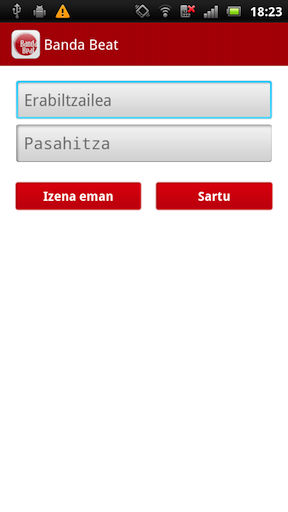
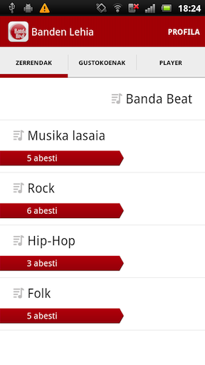
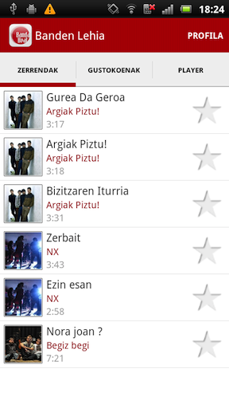
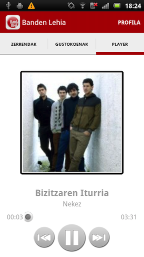
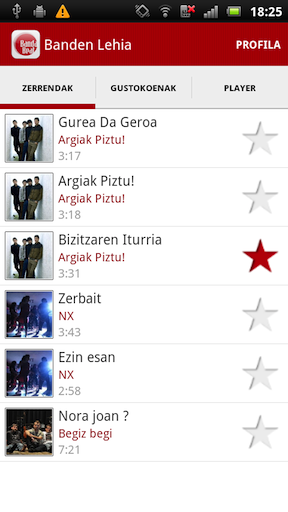
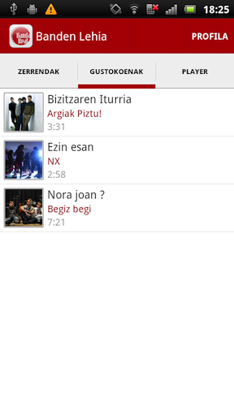
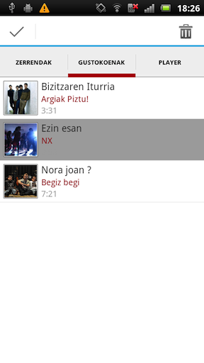
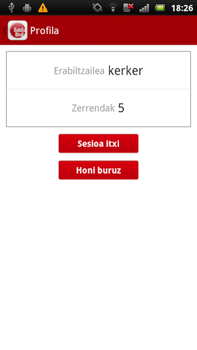

Banda Beat webgunean dituzun musika zerrendak entzun ahalko dituzu streaming bidez, aplikazio honi esker.
1- Lehengo eta behin, Banda Beat webguean izena eman beharko duzu edo aurretik izena eman baduzu, sartu zure erabiltzailea eta pasahitza, aplikazioa zure kontuko informaziora hartu ahal izateko.

2- Aurreko pausua eman eta gero, zuzenean Zerrendak atala agertuko zaizu, non, dituzun musika zerrenda guztiak agertuko diren.

3- Dituzun zerrendetatik, nahi duzuna aukeratuz gero, zerrenda hori dituen abesti guztiak erakutsiko dizkizu.

4- Edozein abesti entzuteko, abestian sakatu eta segituan Playera zabalduko zaizu.

Bertan, taldearen informazioa ikusi ahalko duzu, adibidez, taldearen, abestiaren eta diskaren izena.
Aukeratu duzun abestia amaitzen denean, zerrendako hurrengo abestia jarraiean abian jarriko da. Gainera, mugikorra blokeatuz gero, abestia entzuten jarraituko duzu, eta horrez gain, abestiz aldatu dezakezu.
Musika zerrendetan dituzun abesti guztietatik, zure abestirik gustokoenak aipatu ahal izango dituzu, eta Gustokoenak atalean agertuko zaizkizu.


Aurrerako abestiren bat bertatik kendu nahi baduzu, ez kezkatu, gustokoen zerrenda edozein momentutan editatu dezakezu.

Ezingo dituzu zuzenean musika zerrendak kudeatu aplikaziotik, alabaina, Banda Beat webgunean sortutako zerrendak edo egindako aldaketa guztiak, aplikazioan berehala igarriko dituzu.
Hala eta guztiz ere, aplikazioko Profila atalean, webgunetik zerrendak sortzeko zuzeneko sarbide bat aurkitu dezakezu.
